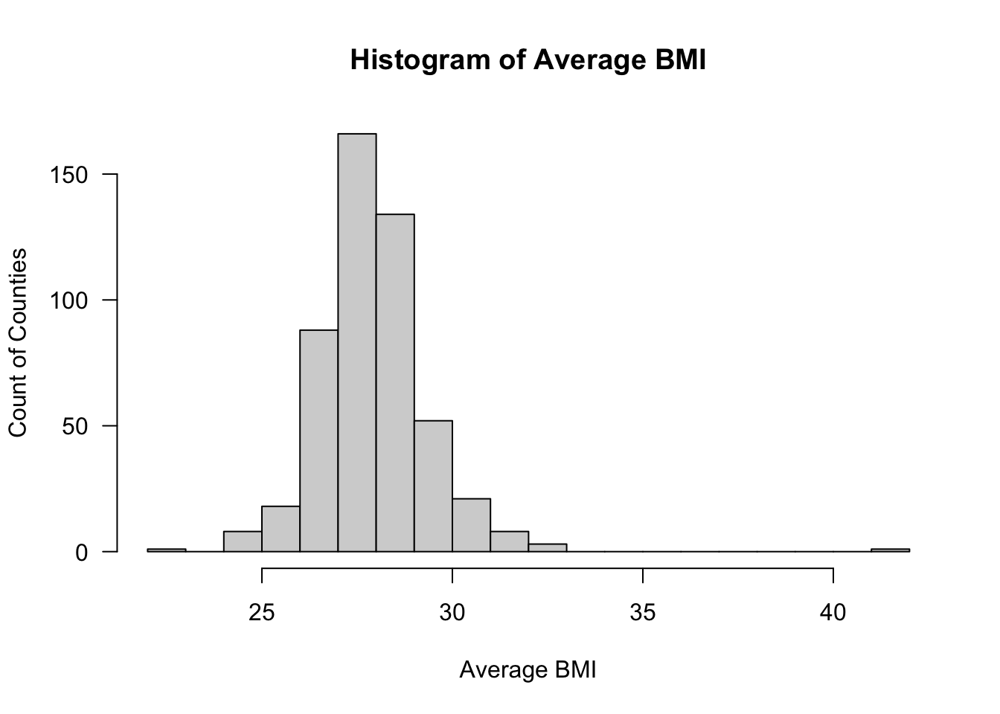

Introduction to methods in environmental epidemiology
Day 1 lab 1: Introduction to linear regression in environmental epidemiology
Author
Robbie M. Parks
Published
July 20, 2025
This lab will involve taking some models and concepts from the Introduction to methods in environmental epidemiology 1 lecture and introduce you to the way linear regression works
0: Preparation
Load necessary packages
library(readr)library(dplyr)
Attaching package: 'dplyr'
The following objects are masked from 'package:stats':
filter, lag
The following objects are masked from 'package:base':
intersect, setdiff, setequal, union
library(broom)library(here)
here() starts at /Users/rmiparks/git/accra_workshop_2025
Rows: 500 Columns: 15
── Column specification ────────────────────────────────────────────────────────
Delimiter: ","
chr (3): FIPS, State, ClimateRegion
dbl (12): AveBMI, AvePM, NumTot, MedHVal, MedHInc, PerAsianAm, PerBlack, Per...
ℹ Use `spec()` to retrieve the full column specification for this data.
ℹ Specify the column types or set `show_col_types = FALSE` to quiet this message.
FIPS AveBMI AvePM NumTot
Length:500 Min. :22.76 Min. : 3.867 Min. : 9656
Class :character 1st Qu.:27.06 1st Qu.: 9.393 1st Qu.: 25205
Mode :character Median :27.82 Median :10.407 Median : 62464
Mean :27.91 Mean :10.285 Mean : 177352
3rd Qu.:28.66 3rd Qu.:11.537 3rd Qu.: 171372
Max. :41.49 Max. :16.078 Max. :3962395
MedHVal MedHInc PerAsianAm PerBlack
Min. : 53400 Min. : 24724 Min. :0.0007893 Min. :0.0008824
1st Qu.:101750 1st Qu.: 39518 1st Qu.:0.0042097 1st Qu.:0.0141791
Median :133200 Median : 45812 Median :0.0090633 Median :0.0627177
Mean :167424 Mean : 49360 Mean :0.0212700 Mean :0.1191479
3rd Qu.:198275 3rd Qu.: 55294 3rd Qu.:0.0240611 3rd Qu.:0.1728076
Max. :825200 Max. :115574 Max. :0.3218201 Max. :0.7701163
PerLatinx PerWhite FemaleUnemp MaleUnemp
Min. :0.003473 Min. :0.1010 Min. : 1.900 Min. : 0.900
1st Qu.:0.017035 1st Qu.:0.6764 1st Qu.: 5.000 1st Qu.: 5.500
Median :0.036143 Median :0.8183 Median : 6.400 Median : 7.150
Mean :0.065809 Mean :0.7746 Mean : 6.728 Mean : 7.534
3rd Qu.:0.067392 3rd Qu.:0.9209 3rd Qu.: 8.025 3rd Qu.: 9.225
Max. :0.881946 Max. :0.9864 Max. :17.100 Max. :19.800
NA's :60 NA's :60
LTHS State ClimateRegion
Min. : 0.30 Length:500 Length:500
1st Qu.:13.88 Class :character Class :character
Median :18.65 Mode :character Mode :character
Mean :19.00
3rd Qu.:23.80
Max. :50.00
# Check specific statisticsprint(min(dta$AvePM))
[1] 3.866667
print(max(dta$AvePM))
[1] 16.07774
2: Plotting Data
# Histogramhist(dta$AveBMI, breaks =20, xlab ="Average BMI", ylab ="Count of Counties", main ="Histogram of Average BMI", las =1)

# Densityplot(density(dta$AveBMI, na.rm =TRUE), col ="red", las =1)
Rows: 972 Columns: 14
── Column specification ────────────────────────────────────────────────────────
Delimiter: ","
chr (2): fips, geometry
dbl (12): avePM.idw, aveBMI, AREA, PERIMETER, num.total, per.white, per.blac...
ℹ Use `spec()` to retrieve the full column specification for this data.
ℹ Specify the column types or set `show_col_types = FALSE` to quiet this message.
This Quarto document covers the introduction, data exploration, regression modeling, assumption checks, and effect modification in the context of environmental epidemiology.